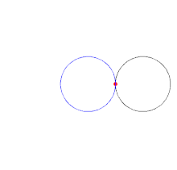

El siguiente proyecto presenta un álbum naturalista de tres sketch que se van sobre dibujando gracias a coordenadas polares
Comenzando con el primero, se llama cardioide a la curva cuya ecuación polar es: ρ=a(1+cos θ), por su semejanza con el dibujo de un corazón. El cardioide es una curva plana dibujado por un punto sobre el perímetro de un círculo que es girado sobre éste. sketch acá
A lo largo de la historia se ha buscado representar figuras de la vida real a través de matemáticas, se ha pasado por diversos sistemas de representación que van desde las coordenadas polares hasta últimamente el estudio de fractales.
En la segunda imagen se muestra una mariposa. La mariposa es el emblema de la transformación, es el símbolo de la libertad en diferentes formas. La sabiduría que nos da la vida a lo largo de las diferentes etapas por las que atravesamos. Todas nos aportan ese granito de arena que se queda en nuestras vidas. Estas hermosas especies se pueden representar matemáticamente usando coordenadas polares.
Temple H. Fay y publicada en el artículo “The Butterfly Curve”, American Mathematical Monthly, mayo de 1989, éste representa a la mariposa tal como se ve en la imagen en coordenadas polares. sketch acá
En la última imagen mediante coordenadas polares se representa una flor, ésta es mas conocida como rosa polar dada por r=cos(kt) para un k=10 esta se muestra en la imagen. sketch acá
En los siguientes puedes revisar mis códigos fuentes: